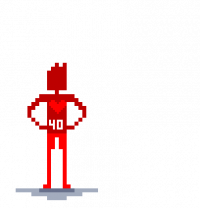

Dieser Artikel ist offiziell und somit von der HTBAH Redaktion mehrmals überprüft worden.
Fähigkeiten sind, wie der Name schon andeutet, Tätigkeiten, die ein Charakter explizit gelernt oder gemeistert hat. Es ist immer besser für eine Aktion, eine passende Fähigkeit zur Hand zu haben, als zu versuchen, auf die Begabung zu würfeln.
Fähigkeiten lassen sich immer in eine der drei Begabungen einordnen. Solltest du dir nicht sicher sein, welcher Begabung eine Fähigkeit zuzuordnen ist, entscheidet der Spielleiter.
Der eigentliche Fähigkeitswert wird aus den eingesetzten Fähigkeitspunkten und dem Begabungswert errechnet. Der Bonus wird zu jeder Fähigkeit addiert, es sei denn, ein Spieler möchte dies explizit nicht.
Der eigentliche Wert einer Fähigkeit, auf den letzten Endes gewürfelt wird, besteht aus den für diese Fähigkeit eingesetzten Punkten zuzüglich des Wertes der entsprechenden Begabung.
Beispiel:
Hartmut hat insgesamt 200 seiner Punkte in Handeln gesteckt (Handeln = 20) und 50 davon in Holzfällen (Holzfällen = 50). Sein endgültiger Wert in Holzfällen berechnet sich folgendermaßen:
Holzfällen 50 + Handeln 20 = Holzfällen 70
Fähigkeiten
Dieser Artikel ist offiziell und somit von der HTBAH Redaktion mehrmals überprüft worden.
Diese Punkte markieren eine Neuerung in unserem Regelwerk.
Geistesblitzpunkte bieten dir die Möglichkeit, dein Schicksal selbst in die Hand zu nehmen. Und das geht so:
Ich habs!
Sie erlauben dir, noch einmal auf eine verpatzte Probe zu würfeln, solange der erste Wurf kein kritischer Misserfolg war. Dazu nimmst du die Grundwerte der einzelnen Gruppen Handeln, Wissen und Soziales, die du zuvor schon berechnet hast, und teilst sie noch einmal durch 10.
Nicht schummeln! Es wird kaufmännisch gerundet. Wenn du also einen Begabungswert von 12 hast, erhältst du in dieser Gruppe nur einen Geistesblitzpunkt. Wenn du einen Begabungswert von 15 hast, erhältst du 2 Geistesblitzpunkte. Die Geistesblitzpunkte gelten nur für die jeweilige Begabung.
Du kannst also keinen Geistesblitzpunkt von Wissen für eine verpatzte Probe auf Rennen (Handeln) verwenden. Zudem sind eingesetzte Punkte für den Moment verbraucht. Wenn du also wie im Beispiel oben nur einen Geistesblitzpunkt in einer Begabung hast, dann überlege dir gut, wann du ihn einsetzen möchtest.
Die Geistesblitzpunkte sind einen Abend bzw. ein Abenteuer lang gültig. Das bedeutet, dass sie sich erst wieder regenerieren, wenn ihr das Abenteuer beendet habt. Ungenutzte Geistesblitzpunkte sind nicht in den nächsten Abend oder das nächste Abenteuer übertragbar.
Wird also ein zweites Abenteuer mit denselben Charakteren gespielt, so beginnt ihr wieder mit einem vollen Geistesblitz-Konto, nicht mehr und nicht weniger.
Müsst ihr ein Abenteuer aus Zeitgründen auf mehrere Abende verteilen, so regenerieren sich die Geistesblitzpunkte bis zum nächsten Abend.
Dieser Artikel ist offiziell und somit von der HTBAH Redaktion mehrmals überprüft worden.
In How to be a Hero bilden drei Arten von Begabungen die Grundlage für deinen Charakter und dessen Fähigkeiten:
Handeln, Wissen und Soziales.
Diese Begabungen geben das Vermögen deines Charakters in einem bestimmten Feld von Fähigkeiten an.
Solltest du eine Aktion ausführen wollen, die du nie explizit gelernt hast, musst du eine Probe auf den Wert der Begabung würfeln, zu der die entsprechende Aktion zählt.
Was bedeuten diese Begabungen?
Handeln: Eine Handlung ist, was dein Charakter aktiv tut, meist mit physischen Auswirkungen. Hierbei ist es egal, ob man Bäume fällt oder auf einem Pferd reiten möchte, all diese Fähigkeiten sind unter Handeln zu finden.
Wissen: Wissen braucht dein Charakter beispielsweise, um eine fremde Sprache zu verstehen, politische Zusammenhänge einordnen zu können, mathematische Zusammenhänge nachvollziehen oder Pflanzen und Tiere unterscheiden zu können.
Soziales: Soziale Fähigkeiten werden vor allem bei der Interaktion mit NSCs notwendig. Wenn dein Charakter beispielsweise mit einem Händler feilschen möchte, versucht, jemanden zu manipulieren oder anhand seiner Menschenkenntnis zu erkennen, ob er belogen wird.
Die Werte der Begabungen ergeben sich aus den in einer Begabung eingesetzten Fähigkeitspunkten geteilt durch 10. Es wird kaufmännisch (also ab 5) aufgerundet.
Beispiel:
123 Punkte in Handeln ausgegeben = 12 Punkte in Handeln
129 Punkte in Handeln ausgegeben = 13 Punkte in Handeln
Kategorie:Charaktererstellung
Dieser Artikel ist offiziell und somit von der HTBAH Redaktion mehrmals überprüft worden.
Hier findest du alles, was du zum erstellen deines Charakters wissen musst. Dieser Sammelbeitrag beinhaltet fast alle Elemente von HTBAH. Weitere Beiträge findest du unter Regelwerk.
Begabungen
Dieser Artikel ist offiziell und somit von der HTBAH Redaktion mehrmals überprüft worden.
In How to be a Hero bilden drei Arten von Begabungen die Grundlage für deinen Charakter und dessen Fähigkeiten:
Handeln, Wissen und Soziales.
Diese Begabungen geben das Vermögen deines Charakters in einem bestimmten Feld von Fähigkeiten an.
Solltest du eine Aktion ausführen wollen, die du nie explizit gelernt hast, musst du eine Probe auf den Wert der Begabung würfeln, zu der die entsprechende Aktion zählt.
Was bedeuten diese Begabungen?
Handeln: Eine Handlung ist, was dein Charakter aktiv tut, meist mit physischen Auswirkungen. Hierbei ist es egal, ob man Bäume fällt oder auf einem Pferd reiten möchte, all diese Fähigkeiten sind unter Handeln zu finden.
Wissen: Wissen braucht dein Charakter beispielsweise, um eine fremde Sprache zu verstehen, politische Zusammenhänge einordnen zu können, mathematische Zusammenhänge nachvollziehen oder Pflanzen und Tiere unterscheiden zu können.
Soziales: Soziale Fähigkeiten werden vor allem bei der Interaktion mit NSCs notwendig. Wenn dein Charakter beispielsweise mit einem Händler feilschen möchte, versucht, jemanden zu manipulieren oder anhand seiner Menschenkenntnis zu erkennen, ob er belogen wird.
Die Werte der Begabungen ergeben sich aus den in einer Begabung eingesetzten Fähigkeitspunkten geteilt durch 10. Es wird kaufmännisch (also ab 5) aufgerundet.
Beispiel:
123 Punkte in Handeln ausgegeben = 12 Punkte in Handeln
129 Punkte in Handeln ausgegeben = 13 Punkte in Handeln
Handeln
Dieser Artikel ist offiziell und somit von der HTBAH Redaktion mehrmals überprüft worden.Uhg - ist das schwer!
Handeln hat vor allem eine physische Komponente. Körperlich anstrengende Aktionen (bspw. das Anheben eines schweren Gegenstands) zählen genauso in diese Gruppe wie feinmotorische Aktionen (bspw. das Schnitzen einer Holzfigur).
Hier einige Beispiele für typische Fähigkeiten, die unter Handeln fallen:
Dieser Artikel ist offiziell und somit von der HTBAH Redaktion mehrmals überprüft worden.
Ut herois es... was könnte das heißen...?
Fähigkeiten, die in der Gruppe Wissen heimisch sind, gelten oft als neutral und analytisch.
Hierunter fallen meist geistige Fähigkeiten, die besonders von Intelligenz und Bildung abhängen, wie beispielsweise Fremdsprachen, Spurenlesen oder Pflanzenkunde.
Hier sind einige Beispiele für Fähigkeiten, die unter Wissen fallen:
Dieser Artikel ist offiziell und somit von der HTBAH Redaktion mehrmals überprüft worden.
Fähigkeiten sind, wie der Name schon andeutet, Tätigkeiten, die ein Charakter explizit gelernt oder gemeistert hat. Es ist immer besser für eine Aktion, eine passende Fähigkeit zur Hand zu haben, als zu versuchen, auf die Begabung zu würfeln.
Fähigkeiten lassen sich immer in eine der drei Begabungen einordnen. Solltest du dir nicht sicher sein, welcher Begabung eine Fähigkeit zuzuordnen ist, entscheidet der Spielleiter.
Der eigentliche Fähigkeitswert wird aus den eingesetzten Fähigkeitspunkten und dem Begabungswert errechnet. Der Bonus wird zu jeder Fähigkeit addiert, es sei denn, ein Spieler möchte dies explizit nicht.
Der eigentliche Wert einer Fähigkeit, auf den letzten Endes gewürfelt wird, besteht aus den für diese Fähigkeit eingesetzten Punkten zuzüglich des Wertes der entsprechenden Begabung.
Beispiel:
Hartmut hat insgesamt 200 seiner Punkte in Handeln gesteckt (Handeln = 20) und 50 davon in Holzfällen (Holzfällen = 50). Sein endgültiger Wert in Holzfällen berechnet sich folgendermaßen:
Holzfällen 50 + Handeln 20 = Holzfällen 70
Kategorie:Charaktererstellung
Geistesblitzpunkte
Dieser Artikel ist offiziell und somit von der HTBAH Redaktion mehrmals überprüft worden.
Diese Punkte markieren eine Neuerung in unserem Regelwerk.
Geistesblitzpunkte bieten dir die Möglichkeit, dein Schicksal selbst in die Hand zu nehmen. Und das geht so:
Ich habs!
Sie erlauben dir, noch einmal auf eine verpatzte Probe zu würfeln, solange der erste Wurf kein kritischer Misserfolg war. Dazu nimmst du die Grundwerte der einzelnen Gruppen Handeln, Wissen und Soziales, die du zuvor schon berechnet hast, und teilst sie noch einmal durch 10.
Nicht schummeln! Es wird kaufmännisch gerundet. Wenn du also einen Begabungswert von 12 hast, erhältst du in dieser Gruppe nur einen Geistesblitzpunkt. Wenn du einen Begabungswert von 15 hast, erhältst du 2 Geistesblitzpunkte. Die Geistesblitzpunkte gelten nur für die jeweilige Begabung.
Du kannst also keinen Geistesblitzpunkt von Wissen für eine verpatzte Probe auf Rennen (Handeln) verwenden. Zudem sind eingesetzte Punkte für den Moment verbraucht. Wenn du also wie im Beispiel oben nur einen Geistesblitzpunkt in einer Begabung hast, dann überlege dir gut, wann du ihn einsetzen möchtest.
Die Geistesblitzpunkte sind einen Abend bzw. ein Abenteuer lang gültig. Das bedeutet, dass sie sich erst wieder regenerieren, wenn ihr das Abenteuer beendet habt. Ungenutzte Geistesblitzpunkte sind nicht in den nächsten Abend oder das nächste Abenteuer übertragbar.
Wird also ein zweites Abenteuer mit denselben Charakteren gespielt, so beginnt ihr wieder mit einem vollen Geistesblitz-Konto, nicht mehr und nicht weniger.
Müsst ihr ein Abenteuer aus Zeitgründen auf mehrere Abende verteilen, so regenerieren sich die Geistesblitzpunkte bis zum nächsten Abend.
Dieser Artikel ist offiziell und somit von der HTBAH Redaktion mehrmals überprüft worden.
Nun sind wir nach all den Erklärungen endlich bei der tatsächlichen Charaktererstellung angekommen. Falls du etwas nachschlagen willst, schaue einfach auf die Kästen mit der Aufschrift: Zum Nachlesen in den Artikeln Begabungen und Fähigkeiten.
Zunächst ein kleines Vorwort. Jeder Mensch ist in gewissen Dingen besser oder schlechter als andere. Manche Dinge erlernen sich leichter, andere schwerer. Wenn eine Person z.B. sehr fit ist, wird sie wohl wenigstens eine Sportart, wenn nicht sogar mehrere, betreiben und entsprechend mehr Ausdauer haben als jemand, der dies nicht tut.
Eine studierte Person wird wahrscheinlich ein breiteres Wissensspektrum haben und ein Comedian im Zwischenmenschlichen kein kompletter Volltrottel sein.
Deshalb ergeben sich die Werte der Begabungen aus den Werten der Fähigkeiten.
Errechnung
Jeder Charakter erhält zunächst 400 Fähigkeitspunkte.
Zuerst solltest du also Fähigkeiten auf deine Begabungen aufteilen und diese auf den Charakter abstimmmen. Ist das erledigt, nimm
ganz einfach alle Fähigkeitspunkte innerhalb einer Begabung zusammen und teile sie durch 10. Eine Fähigkeit darf nicht auf den Wert 0 gesetzt werden.
Hierbei ist kaufmännisch zu runden.
Beispiel:
129 Punkte in der Begabung Handeln = Handeln 13
Wenn alle deine Punkte in Fähigkeiten investiert wurden, sind es nur noch zwei kleine Schritte zum (rechnerisch) fertigen Charakter.
Nun rechnen wir die Geistesblitzpunkte aus. Nimm also einfach deine Begabungswerte und teile sie jeweils durch 10.
Hierbei ist kaufmännisch zu runden.
Beispiel:
Handeln 13 geteilt durch 10 = 1,3 = 1 Geistesblitzpunkt in Handeln
Handeln 18 geteilt durch 10 = 1,8 = 2 Geistesblitzpunkte in Handeln
Da die Begabungen ebenfalls angeben, wie gut oder leicht man Dinge erlernt, haben diese auch einen Einfluss auf die Fähigkeiten.
Nun nimm einfach den Wert der Begabung und addiere ihn auf jede Fähigkeit die dazu gehört.
Beispiel:
Holzfällen 50 + Handeln 13 = Holzfällen 63
Und schon ist dein Charakter fertig!
Zu guter Letzt ist anzumerken, dass keine Fähigkeiten über 100 Punkte haben kann. Wenn du bei deiner Rechnung für eine Fähigkeit ein Wert größter als 100 rauskommst, setze die überzähligen Punkte anderweitig innerhalb dieser Begabung ein.
Hier noch zwei Empfehlungen, um den Spielspaß zu maximieren:
Meide Fähigkeiten mit niedrigen Werten. Einfach einen oder nur 5 Punkte auf jede Fähigkeit zu verteilen, ist wenig sinnvoll.
Wenn es ein Spieler unbedingt will, kann er bei bestimmten Fähigkeiten auch auf den Bonus der Begabung verzichten.
Charakterentwicklung in Tabellenform
Howkys Charakterbogen (400 Punkte):
Wo habt ihr meinen Charakterbogen her?
Erst verteilen ...
Handeln
Wissen
Soziales
Ausgegeben:
Ausgegeben:
Ausgegeben:
Fußball spielen: 40
Pen-and-Paper-Konzeption: 75
Schauspielern: 68
Beweglichkeit: 30
Verrückte Hintergrundgeschichten: 40
Wikis Illustrieren: 40
Medienmarketing: 55
Interaktion mit Bohnen: 52
zusammenrechnen ...
Handeln
Wissen
Soziales
Ausgegeben:70
Ausgegeben: 170
Ausgegeben: 160
Fußball spielen: 40
Pen-and-Paper-Konzeption: 75
Schauspielern: 68
Beweglichkeit: 30
Verrückte Hintergrundgeschichten: 40
Wikis illustrieren: 40
Medienmarketing: 55
Interaktion mit Bohnen: 52
durch 10 Teilen, um die Werte der Begabungen zu erhalten ...
Voll leicht!
Handeln 7
Wissen 17
Soziales 16
Ausgegeben:70
Ausgegeben: 170
Ausgegeben: 160
Fußball spielen: 40
Pen-and-Paper-Konzeption 75
Schauspielern: 68
Beweglichkeit: 30
Verrückte Hintergrundgeschichten: 40
Wikis illustrieren: 40
Medienmarketing: 55
Interaktion mit Bohnen: 52
nochmal durch 10 teilen, um die Geistesblitzpunkte zu ermitteln ...
Handeln 7 (GBP: 1)
Wissen 17 (GBP: 2)
Soziales 16 (GBP: 2)
Ausgegeben:70
Ausgegeben: 170
Ausgegeben: 160
Fußball spielen: 40
Pen-and-Paper-Konzeption: 75
Schauspielern: 68
Beweglichkeit: 30
Verrückte Hintergrundgeschichten: 40
Wikis illustrieren: 40
Medienmarketing: 55
Interaktion mit Bohnen: 52
und zum Schluss wird addiert!
Handeln 7 (GBP: 1)
Wissen 17 (GBP: 2)
Soziales 16 (GBP: 2)
Ausgegeben: 70
Ausgegeben: 170
Ausgegeben: 160
Fußball spielen: 40 + 7 = 47
Pen-and-Paper-Konzeption: 75 + 17 = 92
Schauspielern: 68 + 16 = 84
Beweglichkeit: 30 + 7 = 37
Verrückte Hintergrundgeschichten: 50 + 17 = 67
Wikis illustrieren: 40 + 16 = 56
Medienmarketing: 55 + 17 = 72
Interaktion mit Bohnen: 52 + 16 = 68
Kategorie:Charaktererstellung
Lebenspunkte
Dieser Artikel ist offiziell und somit von der HTBAH Redaktion mehrmals überprüft worden.
Jeder Charakter hat 100 Lebenspunkte. Fallen diese unter 10, wird der Charakter bewusstlos und braucht medizinische Hilfe. Fallen sie auf 0, stirbt der Charakter. Wird ein Charakter durch einen Angriff schwer verwundet und verliert auf einen Schlag mehr als 60 Lebenspunkte, wird er ebenfalls bewusstlos und kann deshalb logischerweise weder parieren noch angreifen.
Er benötigt dann auch medizinische Versorgung, um später wieder kampf- und handlungsfähig zu werden.
Kategorie:Charaktererstellung
Vor und Nachteile
Dieser Artikel ist offiziell und somit von der HTBAH Redaktion mehrmals überprüft worden.
Achtung! Dieser Abschnitt ist optional und wird vor allem Spielleitern und Spielern empfohlen, die bereits einiges an Erfahrung im Pen-and-Paper-Universen sammeln konnten und/oder ihrem Charakter etwas mehr "Würze" verleihen wollen.
Nicht jeder Mensch ist gleich. Manche Menschen sind sogar eingeschränkt oder haben von Haus aus besondere Vorteile.
Deswegen kann jeder Spieler mit dem Spielleiter einen eigenen Vor- oder Nachteil ausmachen, für den er entweder Fähigkeitspunkte bezahlt oder Fähigkeitspunkte erhält.
Dafür erklärt sich dann der Spieler mit einem spielerischen Nach- oder Vorteil einverstanden, der sich im Zweifelsfall auch in der Spielweise des Charakters wiederspiegelt.
An Beispielen wird das deutlich:
Tobias spielt einen sozial inkompetenten Charakter. Da er seinem Charakter aber noch eine besondere Würze verleihen und noch weitere 40 Punkte auf Computerkenntnis haben will, vereinbart er mit seinem Spielleiter, dass er seinem Charakter den Nachteil "Neurotiker" gibt.
Er verpflichtet sich, dass sein Charakter zwanghaft immer alles sauber und ordentlich halten möchte. Dies beeinflusst für Tobias den Spielablauf und die Spielweise eindeutig. Er erhält dafür nach einigen Verhandlungen von seinem Spielleiter 35 zusätzliche Fähigkeitspunkte.
Der Spielleiter muss nun darauf achten, dass Tobias seinen Nachteil auch ordentlich ausspielt.
Aber auch Vorteile finden hier ihren Platz:
Hartmut möchte, dass sein Charakter stadtbekannt ist, sodass ihn jeder kennt und wenigstens einige ihn respektieren. Er verlangt also den Vorteil "regional bekannt".
Da dies ein großer Vorteil ist, handelt er mit dem Spielleiter aus, wie viele Fähigkeitspunkte er dafür abgeben müsste. Am Ende einigen sie sich auf 90 Punkte.
Nun muss der Spielleiter mit NSC´s anders auf Hartmuts Charakter reagieren.


{kind=link}
{kind=link}
{kind=link}
{kind=link}
{kind=link}
{kind=link}
{kind=link}
{kind=link}